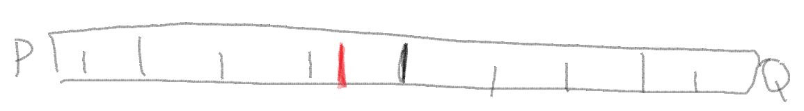
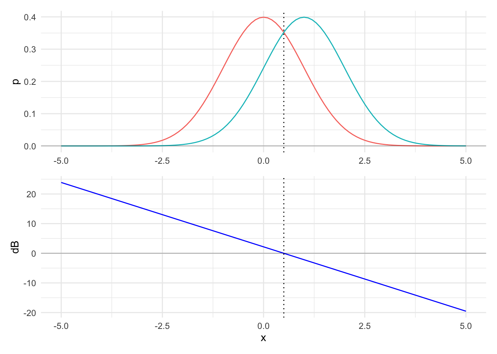

| db | bit | nat | odds | p |
|---|---|---|---|---|
| 0 | 0 | 0.00 | 1:1 | 50% |
| 1 | ⅓ | 0.23 | 5:4 | 56% |
| 2 | ⅔ | 0.46 | π:2 | 61% |
| 3 | 1 | 0.69 | 2:1 | 67% |
| 4 | 1⅓ | 0.92 | 5:2 | 72% |
| 5 | 1⅔ | 1.15 | π:1 | 76% |
| 6 | 2 | 1.38 | 4:1 | 80% |
| 7 | 2⅓ | 1.61 | 5:1 | 83% |
| 8 | 2⅔ | 1.84 | 2π:1 | 86% |
| 9 | 3 | 2.07 | 8:1 | 89% |
| 10 | 3⅓ | 2.30 | 10:1 | 91% |
| 11 | 3⅔ | 2.53 | 4π:1 | 93% |
| 12 | 4 | 2.76 | 16:1 | 94% |
| 13 | 4⅓ | 2.99 | 20:1 | 95% |
| 20 | 6⅔ | 4.60 | 99:1 | 99% |
Information theory
Notes from lectures of intro course on information theory for machine learning by Alex Alemi, later summarized in a blog post:
Lectures: [part I] [part II] [part III]
Introduction
Information theory is a recent invention by Claude Shannon, who was primarily concerned with communication (Shannon 1948). We have to thank him for basically all things digital!
Here, we develop information theory from probability theory rather than in the original context of communication (see curated list of books by Frank Nielsen).
Fundamentally, information theory is about measures:
- weight of evidence: measures the “importance” of data for distinguishing between two hypotheses
\[w[x;p,q] \equiv \log \frac{p(x)}{q(x)}\]
- relative entropy (a.k.a. Kullback–Leibler (KL) divergence): measures a “distance” between two distributions
\[\mathcal{S}[p;q] \equiv \sum p(x) \log \frac{p(x)}{q(x)}\]
- entropy: measures the “complexity” of a distribution
\[\mathcal{S}[p] \equiv - \sum p(x) \log p(x)\]
- mutual information: measures the “complexity” of the association between two variables
\[\mathcal{I}(X;Y) \equiv \sum p(x,y) \log \frac{p(x,y)}{p(x)p(y)}\]
Weight of evidence
In the beginning, there was Bayes’ rule (joint probability/product rule factored/sliced two ways + algebra):
\[P(A,B) = P(A)P(B \mid A) = P(B)P(A \mid B) = P(B, A)\]
\[P(B \mid A) = \frac{P(B) P(A \mid B)}{P(A)}\]
All “frequentist vs. Bayesian, etc.” controversies are rooted in the philosophical interpretation of this uncontroversial rule of probability theory when applied to statistical inference:
\[P(H \mid D) = \frac{P(H) P(D \mid H)}{P(D)}\] where:
\(P(H \mid D) = \text{the (posterior) probability of the hypothesis after observing the data}\)
\(P(H) = \text{the (prior) probability of the hypothesis before observing the data}\)
\(P(D \mid H) = \text{the probability of the observed data given the hypothesis (a.k.a. the likelihood of the hypothesis given the observed data)}\)
\(P(D) = \text{the (marginal) probability (a.k.a. evidence or marginal likelihood) of the observed data, computed by averaging over all hypotheses}\)
For example, \(P(H \mid D) = \frac{P(H) P(D \mid H)}{P(H) P(D \mid H)+ P(\lnot H) P(D \mid \lnot H)}\)
The evidence/marginal likelihood is the tricky bit… so, let’s get rid of it!
We begin by considering just two hypotheses \(H_1\) and \(H_2\):
\[\frac{P(H_1 \mid D)}{P(H_2 \mid D)} = \frac{P(H_1)}{P(H_2)} \frac{P(D \mid H_1)}{P(D \mid H_2)}\]
where:
\(\frac{P(H_1 \mid D)}{P(H_2 \mid D)} = \text{the posterior odds}\)
\(\frac{P(H_1)}{P(H_2)} = \text{the prior odds}\)
\(\frac{P(D \mid H_1)}{P(D \mid H_2)} = \text{the Bayes' factor/likelihood ratio}\)
Then, we log both sides:
\[\log \frac{P(H_1 \mid D)}{P(H_2 \mid D)} = \log \Big(\frac{P(H_1)}{P(H_2)} \frac{P(D \mid H_1)}{P(D \mid H_2)} \Big) = \log \frac{P(H_1)}{P(H_2)} + \log \frac{P(D \mid H_1)}{P(D \mid H_2)}\]
where:
\(\log \frac{P(H_1 \mid D)}{P(H_2 \mid D)} = \text{the posterior log odds}\)
\(\log \frac{P(H_1)}{P(H_2)} = \text{the prior log odds}\)
\(\log \frac{P(D \mid H_1)}{P(D \mid H_2)} = \text{the weight of evidence}\)
The posterior log odds are prior log odds + the weight of evidence.
If you don’t know what odds are (in the case of a single event):
\[\text{Odds}(A) = \frac{P(A)}{P(\lnot A)} = \frac{P(A)}{1 - P(A)}\]
For example:
\[P(A) = 0.5 = \frac{1}{2} \rightarrow \text{Odds}(A) = \frac{\frac{1}{2}}{\frac{1}{2}} = 1 = 1 : 1\]
\[P(A) = 0.75 = \frac{3}{4} \rightarrow \text{Odds}(A) = \frac{\frac{3}{4}}{\frac{1}{4}} = 3 = 3 : 1\]
More generally, odds are the ratio of any two probabilities, not necessarily \(P(A)\) and \(P(\lnot A)\), e.g., \(\frac{P(H_1)}{P(H_2)}\).
We define the logarithm of the likelihood ration as the information in data \(X = x\) for discrimination in favor of \(H_1\) against \(H_2\), i.e., the weight of evidence for \(H_1\) (against \(H_2\)) given data \(X = x\).
Change of notation
\[\begin{align} P(X = x \mid P) & \rightarrow p(x) \\ P(X = x \mid Q) & \rightarrow q(x) \\ \end{align}\]
The probability that some variable \(X\) takes on a value \(x\) given that some model/hypothesis is true.
The weight of evidence is:
\[\log \frac{p(x)}{q(x)}\]
Units of weight of evidence
Probability vs (logarithmic) evidence space to measure strength of belief.
\(\log_2 : \text{bit, shannon}\)
\(\log_e : \text{nat}\)
\(\log_{10} : \text{dit, ban, hartley}\)
\(10\log_{10} : \text{deciban}\)
Independent observations decompose additively in (logarithmic) evidence space, as opposed to multiplicatively in probability space.
\[\log \frac{p(x_1, x_2, \ldots)}{q(x_1, x_2, \ldots)} = \log \frac{p(x_1)\ p(x_2)\ \ldots}{q(x_1)\ q(x_2)\ \ldots} = \log \frac{p(x_1)}{q(x_1)} + \log \frac{p(x_2)}{q(x_2)} + \ldots \]
Belief-O-Meter

Loaded die
\(H_1 : \text{die is loaded, shows 6 1/3 of the times (and 1, 2, 3, 4, or 5 2/3 of the times)}\)
\(H_2 : \text{die is not loaded, shows 6 1/6 of the times (and 1, 2, 3, 4, or 5 5/6 of the times})\)
\(D : \text{die shows 6} \implies 10\log_{10}\frac{P(D \mid H_1)}{P(D \mid H_2)} = 10\log_{10}\frac{\frac{1}{3}}{\frac{1}{6}} = 10\log_{10}(2) \approx 3\ \text{dB}\)
\(D : \text{die shows 1, 2, 3, 4, or 5} \implies 10\log_{10}\frac{P(D \mid H_1)}{P(D \mid H_2)} = 10\log_{10}\frac{\frac{2}{3}}{\frac{5}{6}} = 10\log_{10}(0.8) \approx -1\ \text{dB}\)
If we observe \(\{1, 4, 6, 6\}\) then (assuming i.i.d.) the weight of the evidence is \(-1 + (-1) + 3 + 3 = 4\ \text{dB}\). Thus, if our prior log odds were \(0\ \text{dB}\) (i.e., \(H_1\) and \(H_2\) are equally likely, max entropy), then our posterior log odds are \(4\ \text{dB}\) , corresponding to \(16:1\ \text{odds}\) in favor of \(H_1\) vs. \(H_2\).
Human births
\(H_1 : \text{human births are 50% ♂ and 50% ♀}\)
\(H_2 : \text{human births are 51% ♂ and 49% ♀}\)
Laplace looked at Parisian birth records and found that between 1745 and 1770, 251,527 ♂ and 241,945 ♀ were born.
Thus, the weight of the evidence in favor of \(H_1\) vs. \(H_2\) is:
\[251,527 \cdot 10\log_{10} \frac{0.51}{0.50} + 241,945 \cdot 10\log_{10} \frac{0.49}{0.50} = 21,632 + (-21,228) = 404\ \text{dB}\]
corresponding to \(2.51\times 10^{40}:1\ \text{odds}\) in favor of \(H_1\) vs. \(H_2\) (25.1 duodecillions to one).
COVID test
\(H_1 : \text{you have COVID}\)
\(H_2 : \text{you don't have COVID}\)
Typical sensitivity of a COVID test:
\[P(+ \mid \text{COVID}) = 0.94\]
Typical specificity of a COVID test:
\[P(- \mid \lnot\text{COVID}) = 0.96\]
Typical prevalence of COVID is between 0.5-1.5%. Thus, assuming 1% prevalence of COVID, i.e., \(P{(\text{COVID})} = 0.01\):
\[10\log_{10}\frac{0.01}{0.99} \approx 10\log_{10}(0.0101) = -19.96\]
\(D : + \implies 10\log_{10}\frac{P(+ \mid \text{COVID})}{P(+ \mid \lnot \text{COVID})} = 10\log_{10}\frac{0.94}{0.04} = 10\log_{10}(23.5) = 13.71\ \text{dB}\)
\(D : - \implies 10\log_{10}\frac{P(- \mid \text{COVID})}{P(- \mid \lnot \text{COVID})} = 10\log_{10}\frac{0.06}{0.96} = 10\log_{10}(0.0625) = -12.04\ \text{dB}\)
So, if a person drawn at random from the population tests positive for COVID, they are only approx. 19% likely to have COVID:
\[-19.96 + 13.71 = -6.25\ \text{dB}\]
\[P = \frac{1}{1 + 10^{-\text{dB}/10}}\]
\[P(\text{COVID} \mid +) = \frac{1}{1 + 10^{0.625}} = \frac{1}{5.217} = 0.192\]
This conversion from odds (or dB) to probability is valid only when the odds are between complementary hypotheses (i.e., mutually exclusive and exhaustive hypotheses), so that \(H_2=\neg H_1\) and \(P(H_1)+P(H_2)=1\).
Complementary = mutually exclusive and collectively exhaustive:
\[H_1 \cap H_2 = \varnothing \quad \text{and} \quad H_1 \cup H_2 = \Omega\]
Equivalently:
\[P(H_1) + P(H_2) = 1\]
\[P(H_2) = 1 - P(H_1) = P(\lnot H_1)\]
Continuous hypotheses

Blue line is weight of evidence \(x\) for \(H_1\) (red line) vs. \(H_2\) (green line).
Two bags of M&Ms
Bags of M&Ms produced at the Hackettstown and Cleveland factories differ in their color distributions and are stamped with distinct codes: bags with HKP in their serial no. are from Hackettstown, while bags with CLV in their serial no. are from Cleveland.
The color proportions vary by factory as follows:
| Color | HKP | CLV | dB |
|---|---|---|---|
| Orange | 0.250 | 0.205 | 0.8619 |
| Blue | 0.250 | 0.207 | 0.8197 |
| Green | 0.125 | 0.198 | -1.9976 |
| Red | 0.125 | 0.131 | -0.2036 |
| Yellow | 0.125 | 0.135 | -0.3342 |
| Brown | 0.125 | 0.124 | 0.0349 |
HKP is \(H_1\) and CLV is \(H_2\)
Relative entropy
xxx
Entropy
xxx
Mutual information
xxx
References
Shannon, C. E. 1948. “A Mathematical Theory of Communication.” Bell System Technical Journal 27 (3): 379–423. https://doi.org/10.1002/j.1538-7305.1948.tb01338.x.